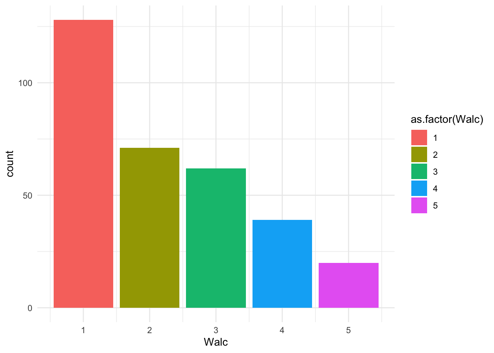
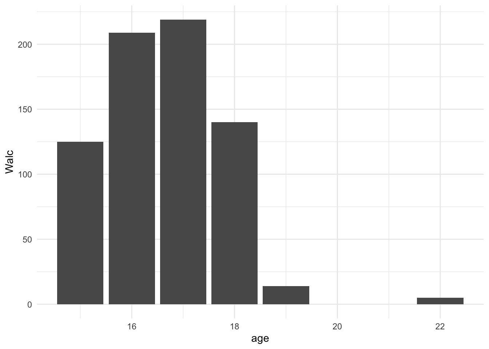
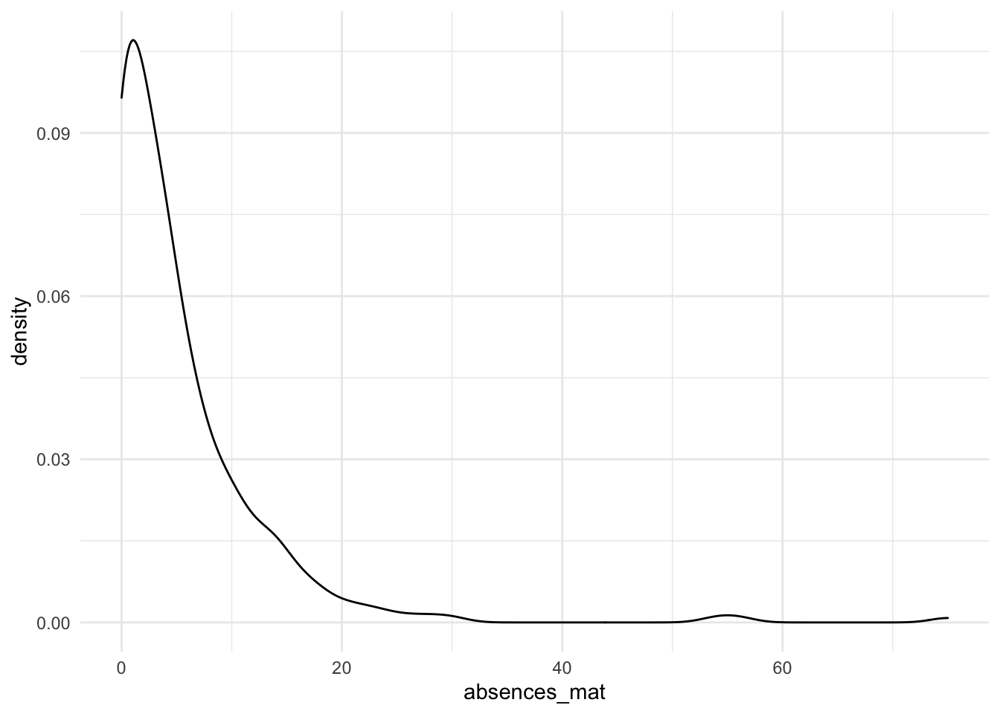

10 Описательные статистики и визуализации
Выбранные для анализа предобработанные переменные исследованы описательными статистиками и предварительно визуализированы для общего понимания)
Теперь давайте поизучаем данные. Как ведут себя выбранные для анализа переменные? Что это за данные: в какой шкале они записаны, непрерывные или дискретные? Каковы максимальные и миниамальные значения? А самые встречающиеся? Какова вообще встречаемость разных значений?
Такое описание данных называется описательными статистиками (descipritve stats), потому что, как уже понятно из названия, описывает наши данные. Это идет в разрез со статистиками вывода (inferential stats), когда мы делаем выводы относительно гипотез – сравнение двух выборок с определением статистической значимости результатов, корреляционный тест, определение коэффциентов в линейной регрессии и так далее. Сейчас нас интересует исследование самих переменных, поэтому речь здесь пойдет об описательных статистиках.
10.0.1 Описательные статистики
Переменные, которые нас интересовали – для одной гипотезы это возраст (Age) и употребление алкоголя на выходных (Walc), для другой – отношения в семье (famrel) и употребление алкоголя в рабочие дни (Dalc). Рассмотрим их подробнее. И еще дл
## Min. 1st Qu. Median Mean 3rd Qu. Max.
## 15.00 16.00 16.00 16.52 17.00 22.00Более детальный способ – с помощью дополнительных пакетов, например, Skimr и функции skim
| Name | students$age |
| Number of rows | 320 |
| Number of columns | 1 |
| _______________________ | |
| Column type frequency: | |
| numeric | 1 |
| ________________________ | |
| Group variables | None |
Variable type: numeric
| skim_variable | n_missing | complete_rate | mean | sd | p0 | p25 | p50 | p75 | p100 | hist |
|---|---|---|---|---|---|---|---|---|---|---|
| data | 0 | 1 | 16.52 | 1.14 | 15 | 16 | 16 | 17 | 22 | ▇▅▃▁▁ |
| Name | students |
| Number of rows | 320 |
| Number of columns | 41 |
| _______________________ | |
| Column type frequency: | |
| character | 19 |
| numeric | 22 |
| ________________________ | |
| Group variables | None |
Variable type: character
| skim_variable | n_missing | complete_rate | min | max | empty | n_unique | whitespace |
|---|---|---|---|---|---|---|---|
| student | 0 | 1 | 3 | 5 | 0 | 320 | 0 |
| school | 0 | 1 | 2 | 2 | 0 | 2 | 0 |
| sex | 0 | 1 | 1 | 1 | 0 | 2 | 0 |
| address | 0 | 1 | 1 | 1 | 0 | 2 | 0 |
| famsize | 0 | 1 | 3 | 3 | 0 | 2 | 0 |
| Pstatus | 0 | 1 | 1 | 1 | 0 | 2 | 0 |
| Mjob | 0 | 1 | 5 | 8 | 0 | 5 | 0 |
| Fjob | 0 | 1 | 5 | 8 | 0 | 5 | 0 |
| reason | 0 | 1 | 4 | 10 | 0 | 4 | 0 |
| guardian | 0 | 1 | 5 | 6 | 0 | 3 | 0 |
| schoolsup | 0 | 1 | 2 | 3 | 0 | 2 | 0 |
| famsup | 0 | 1 | 2 | 3 | 0 | 2 | 0 |
| paid_mat | 0 | 1 | 2 | 3 | 0 | 2 | 0 |
| activities | 0 | 1 | 2 | 3 | 0 | 2 | 0 |
| nursery | 0 | 1 | 2 | 3 | 0 | 2 | 0 |
| higher | 0 | 1 | 2 | 3 | 0 | 2 | 0 |
| internet | 0 | 1 | 2 | 3 | 0 | 2 | 0 |
| romantic | 0 | 1 | 2 | 3 | 0 | 2 | 0 |
| paid_por | 0 | 1 | 2 | 3 | 0 | 2 | 0 |
Variable type: numeric
| skim_variable | n_missing | complete_rate | mean | sd | p0 | p25 | p50 | p75 | p100 | hist |
|---|---|---|---|---|---|---|---|---|---|---|
| age | 0 | 1 | 16.52 | 1.14 | 15 | 16 | 16.00 | 17.00 | 22.00 | ▇▅▃▁▁ |
| Medu | 0 | 1 | 2.87 | 1.07 | 0 | 2 | 3.00 | 4.00 | 4.00 | ▁▂▆▅▇ |
| Fedu | 0 | 1 | 2.62 | 1.09 | 0 | 2 | 3.00 | 4.00 | 4.00 | ▁▅▇▇▇ |
| traveltime | 0 | 1 | 1.43 | 0.69 | 1 | 1 | 1.00 | 2.00 | 4.00 | ▇▃▁▁▁ |
| studytime | 0 | 1 | 2.08 | 0.87 | 1 | 1 | 2.00 | 3.00 | 4.00 | ▅▇▁▃▁ |
| failures | 0 | 1 | 0.08 | 0.39 | 0 | 0 | 0.00 | 0.00 | 3.00 | ▇▁▁▁▁ |
| famrel | 0 | 1 | 3.99 | 0.89 | 1 | 4 | 4.00 | 5.00 | 5.00 | ▁▁▂▇▅ |
| freetime | 0 | 1 | 3.20 | 0.97 | 1 | 3 | 3.00 | 4.00 | 5.00 | ▁▃▇▆▂ |
| goout | 0 | 1 | 3.07 | 1.10 | 1 | 2 | 3.00 | 4.00 | 5.00 | ▂▆▇▅▃ |
| Dalc | 0 | 1 | 1.44 | 0.88 | 1 | 1 | 1.00 | 2.00 | 5.00 | ▇▂▁▁▁ |
| Walc | 0 | 1 | 2.22 | 1.26 | 1 | 1 | 2.00 | 3.00 | 5.00 | ▇▅▃▂▁ |
| health | 0 | 1 | 3.52 | 1.42 | 1 | 3 | 4.00 | 5.00 | 5.00 | ▃▂▅▃▇ |
| absences_mat | 0 | 1 | 5.41 | 7.84 | 0 | 0 | 4.00 | 7.25 | 75.00 | ▇▁▁▁▁ |
| G1_mat | 0 | 1 | 11.29 | 3.20 | 5 | 9 | 11.00 | 14.00 | 19.00 | ▃▇▇▅▂ |
| G2_mat | 0 | 1 | 11.18 | 3.67 | 0 | 9 | 11.00 | 14.00 | 19.00 | ▁▂▇▇▂ |
| G3_mat | 0 | 1 | 11.04 | 4.30 | 0 | 9 | 11.00 | 14.00 | 20.00 | ▁▃▇▆▂ |
| absences_por | 0 | 1 | 3.25 | 4.56 | 0 | 0 | 2.00 | 4.00 | 32.00 | ▇▁▁▁▁ |
| G1_por | 0 | 1 | 12.39 | 2.56 | 0 | 11 | 12.00 | 14.00 | 19.00 | ▁▁▅▇▂ |
| G2_por | 0 | 1 | 12.57 | 2.42 | 5 | 11 | 12.00 | 14.00 | 19.00 | ▁▃▇▅▁ |
| G3_por | 0 | 1 | 12.88 | 2.89 | 0 | 11 | 13.00 | 15.00 | 19.00 | ▁▁▅▇▃ |
| G_mat | 0 | 1 | 11.17 | 3.56 | 2 | 9 | 11.00 | 13.67 | 19.33 | ▁▃▇▅▂ |
| G_por | 0 | 1 | 12.62 | 2.51 | 4 | 11 | 12.67 | 14.33 | 18.67 | ▁▂▇▆▂ |
10.1 Таблицы и пропорции
##
## 1 2 3 4 5
## 15 43 11 10 5 2
## 16 37 20 12 14 8
## 17 24 20 24 12 7
## 18 23 18 13 8 2
## 19 1 2 3 0 0
## 22 0 0 0 0 1##
## 1 2 3 4 5
## 15 0.61 0.15 0.14 0.07 0.03
## 16 0.41 0.22 0.13 0.15 0.09
## 17 0.28 0.23 0.28 0.14 0.08
## 18 0.36 0.28 0.20 0.12 0.03
## 19 0.17 0.33 0.50 0.00 0.00
## 22 0.00 0.00 0.00 0.00 1.0010.2 Описательные визуализации
Какой график построить для исследования данных внутри одной переменной?
Гистограмма
Если переменная количественная и дискретная или строковая – гистограмму (частота встречаемости отдельных значений).


Другой вариант визуализации гистограммы – с помощью барплота.
Барплоты
students %>%
ggplot(aes(x=Walc)) +
geom_bar(aes(fill = as.factor(Walc)), stat = 'count') +
theme_minimal()
Сейчас мы нарисовали точно такую же диаграмму, но с помощью атрибута geom_bar вместо geom_histogram функции ggplot. Гистограммного вида мы добились с помощью значения count атрибута stat. Этот атрибут означает, что вместо барплота, который строится по двум переменным x и y, мы будем строить график количества значений (гистограмму) для одной переменной x. Другой популярный вариант значения атрибута stat - значение identity, буквально означает “строим барплот как есть, по двум переменным”:
students %>%
ggplot(aes(x=as.factor(age), y = Walc)) +
geom_bar(aes(x=as.factor(age), y = as.factor(Walc), fill = as.factor(Walc)), stat = 'identity') +
theme_minimal()
students %>%
ggplot(aes(x=age, y = Walc)) +
geom_bar(aes(x=age, y = Walc), stat = 'identity') +
theme_minimal()
Здесь я еще сделала преобразование as.factor для переменной age.
students %>%
ggplot(aes(x = as.factor(age), y = as.factor(Walc))) +
geom_bar(aes(fill = as.factor(Walc)), stat = 'identity') +
theme_minimal()
График плотности вероятности
Если переменная количественная, и данные непрерывны – график плотности (вероятности). В нашем датасете на количественную непрерывную переменную больше всего похожи пропуски занятий


10.3 Визуализации статистического вывода, которые тоже помогают понять данные
Хорошо, посмотрели, как ведут себя данные в наших целевых переменных: что из себя представляют, каков характер распредедения.
А что, если нам интересно посмотреть переменные не по одной, а в зависимости друг от друга? Если взять две переменные, по осям x и y?
Такие графики мы обычно строим, когда нужно визуализироовать результаты какого-либо статистического тестирования: сравнения двух средних, поиска корреляции и т.д. Поэтому я назвала этот пункт “визуализациями статистического вывода”. Однако, сами статистические тесты сейчас я не провожу, но мне интересно взглянуть на данные, как они ведут себя уже не сами по себе, а в соответствии с выдвинутыми гипотезами?
Диаграмма рассеяния
students %>%
ggplot(aes(x = absences_mat, y = G_mat)) +
geom_point(aes(colour = absences_mat)) +
theme_minimal()Коррелограмма
Допустим, мы хотим посмотреть корреляцию всех количественных переменных соо всеми (никогда так не делайте – вы обязательно найдетете какую-нибудь связь, возможно из-за статистической ошибки и несмотря на то, что не искали эту связь, и соблазн выдать ее за свою гипотезу будет слишком велик).
students %>%
select(traveltime, studytime, famrel, freetime, Dalc, Walc, health, absences_mat, absences_por, G_mat, G_por) %>%
as.matrix() -> students_numeric_matrix## traveltime studytime famrel freetime Dalc Walc health
## traveltime 1.00 -0.10 -0.03 -0.06 0.16 0.11 0.02
## studytime -0.10 1.00 0.00 -0.09 -0.17 -0.23 -0.04
## famrel -0.03 0.00 1.00 0.09 -0.06 -0.13 0.14
## freetime -0.06 -0.09 0.09 1.00 0.20 0.12 0.07
## Dalc 0.16 -0.17 -0.06 0.20 1.00 0.65 0.06
## Walc 0.11 -0.23 -0.13 0.12 0.65 1.00 0.07
## health 0.02 -0.04 0.14 0.07 0.06 0.07 1.00
## absences_mat 0.00 -0.08 -0.05 -0.05 0.15 0.21 0.01
## absences_por 0.05 -0.13 -0.03 -0.01 0.11 0.15 0.00
## G_mat -0.16 0.09 -0.05 -0.02 -0.07 -0.06 -0.06
## G_por -0.18 0.24 -0.03 -0.10 -0.27 -0.18 -0.16
## absences_mat absences_por G_mat G_por
## traveltime 0.00 0.05 -0.16 -0.18
## studytime -0.08 -0.13 0.09 0.24
## famrel -0.05 -0.03 -0.05 -0.03
## freetime -0.05 -0.01 -0.02 -0.10
## Dalc 0.15 0.11 -0.07 -0.27
## Walc 0.21 0.15 -0.06 -0.18
## health 0.01 0.00 -0.06 -0.16
## absences_mat 1.00 0.56 -0.06 -0.13
## absences_por 0.56 1.00 -0.12 -0.10
## G_mat -0.06 -0.12 1.00 0.59
## G_por -0.13 -0.10 0.59 1.00Или более красивый и понятный вариант с помощью пакета Hmisc
## Loading required package: lattice## Loading required package: survival## Loading required package: Formula##
## Attaching package: 'Hmisc'## The following objects are masked from 'package:dplyr':
##
## src, summarize## The following objects are masked from 'package:base':
##
## format.pval, units## traveltime studytime famrel freetime Dalc Walc health
## traveltime 1.00 -0.10 -0.03 -0.06 0.16 0.11 0.02
## studytime -0.10 1.00 0.00 -0.09 -0.17 -0.23 -0.04
## famrel -0.03 0.00 1.00 0.09 -0.06 -0.13 0.14
## freetime -0.06 -0.09 0.09 1.00 0.20 0.12 0.07
## Dalc 0.16 -0.17 -0.06 0.20 1.00 0.65 0.06
## Walc 0.11 -0.23 -0.13 0.12 0.65 1.00 0.07
## health 0.02 -0.04 0.14 0.07 0.06 0.07 1.00
## absences_mat 0.00 -0.08 -0.05 -0.05 0.15 0.21 0.01
## absences_por 0.05 -0.13 -0.03 -0.01 0.11 0.15 0.00
## G_mat -0.16 0.09 -0.05 -0.02 -0.07 -0.06 -0.06
## G_por -0.18 0.24 -0.03 -0.10 -0.27 -0.18 -0.16
## absences_mat absences_por G_mat G_por
## traveltime 0.00 0.05 -0.16 -0.18
## studytime -0.08 -0.13 0.09 0.24
## famrel -0.05 -0.03 -0.05 -0.03
## freetime -0.05 -0.01 -0.02 -0.10
## Dalc 0.15 0.11 -0.07 -0.27
## Walc 0.21 0.15 -0.06 -0.18
## health 0.01 0.00 -0.06 -0.16
## absences_mat 1.00 0.56 -0.06 -0.13
## absences_por 0.56 1.00 -0.12 -0.10
## G_mat -0.06 -0.12 1.00 0.59
## G_por -0.13 -0.10 0.59 1.00
##
## n= 320
##
##
## P
## traveltime studytime famrel freetime Dalc Walc health
## traveltime 0.0651 0.6269 0.3188 0.0038 0.0597 0.7100
## studytime 0.0651 0.9804 0.1011 0.0020 0.0000 0.4651
## famrel 0.6269 0.9804 0.1044 0.3062 0.0238 0.0124
## freetime 0.3188 0.1011 0.1044 0.0002 0.0333 0.2061
## Dalc 0.0038 0.0020 0.3062 0.0002 0.0000 0.2849
## Walc 0.0597 0.0000 0.0238 0.0333 0.0000 0.2088
## health 0.7100 0.4651 0.0124 0.2061 0.2849 0.2088
## absences_mat 0.9792 0.1414 0.3914 0.4091 0.0066 0.0002 0.8290
## absences_por 0.3328 0.0157 0.5984 0.8386 0.0546 0.0070 0.9847
## G_mat 0.0050 0.1221 0.3352 0.7490 0.2238 0.3051 0.2539
## G_por 0.0014 0.0000 0.5365 0.0745 0.0000 0.0010 0.0040
## absences_mat absences_por G_mat G_por
## traveltime 0.9792 0.3328 0.0050 0.0014
## studytime 0.1414 0.0157 0.1221 0.0000
## famrel 0.3914 0.5984 0.3352 0.5365
## freetime 0.4091 0.8386 0.7490 0.0745
## Dalc 0.0066 0.0546 0.2238 0.0000
## Walc 0.0002 0.0070 0.3051 0.0010
## health 0.8290 0.9847 0.2539 0.0040
## absences_mat 0.0000 0.2991 0.0195
## absences_por 0.0000 0.0369 0.0740
## G_mat 0.2991 0.0369 0.0000
## G_por 0.0195 0.0740 0.0000Визуализируем матрицу корреляций в коррелограмму
## corrplot 0.90 loaded
# corrplot(rcorr(students_numeric_matrix)$r, p.mat = rcorr(students_numeric_matrix)$P, sig.level = 0.05, insig = "blank")
Боксплот и вайолин плот
Если нам интересно посмотреть значения в группах, можно построить боксплот (тот самый ящик с усами)
students %>%
ggplot(aes(x=Walc, y = age)) +
geom_boxplot(aes(fill = as.factor(Walc))) +
theme_minimal()
Или даже лучше и информативнее – вайолин плот (повернутое на бок распределение плотности вероятности, зачастую вместе с ящиком с усами.)
students %>%
ggplot(aes(x=Walc, y = age)) +
geom_violin(aes(fill = as.factor(Walc))) +
theme_minimal()Визуализация линейной регрессии
students %>%
# slice(absences_mat<40) %>%
ggplot(aes(x=absences_mat, y = G_mat)) +
geom_point(aes(colour = absences_mat)) +
geom_smooth(method="lm") +
theme_minimal()## `geom_smooth()` using formula 'y ~ x'Визуализация логистической регрессии
10.4 Визуализации в R с помощью ggplot2
Грамматика графиков (The Crammar of Graphics)
Большую часть этих графиков я визуализировала с помощью пакета ggplot2. Пару слов о том, как он работает.
https://ggplot2.tidyverse.org/
По сути, это – универсальный конструктор графиков. Мы подгружаем данные, а дальше, послойно, собираем на них график как конструктор, накладывая каждый слой на предыдущий. В парадигме грамматики графиков любой график состоит из нескольких слоев:
первый слой – данные, передаем их чаще всего первой строчкой с объявлением функции
ggplot()geom (геометрический объект), обычно второй строчкой: geom_hist, geom_bar, geom_point, geom_line
aes (эстетики) - аргумент geom или ggplot – оси x и y, цвета (для обводки и точек цвет задает через color, для заливки и объектов, имеющих плозадь – через fill). Пишут внутри aes() в скобках внутри геома или ggplot. Задавая аргументы-эстетики как бы натягиваем наши данные на координатную ось и геометрический объект, задаем правила преообразования данных в график. Это были обязательные слои построения графиков. Есть еще вспомогательные, которые доступны не для всех геомов:
stat (статистические трансформации) - используется в основном для превращения барплота в гистограмму (stat=“count”)
facets - позволяет отобразить график в фасетах
themes - настраивает визуальные темы (вне зависимости от данных и геома: цвет фона графика, прозрачность подложки, толщина и цвет координатной сетки и т.д.)
10.5 Визуализации данных в системах для построения дашбордов
https://www.tableau.com/ https://www.tableau.com/data-insights/dashboard-showcase https://www.datawrapper.de/